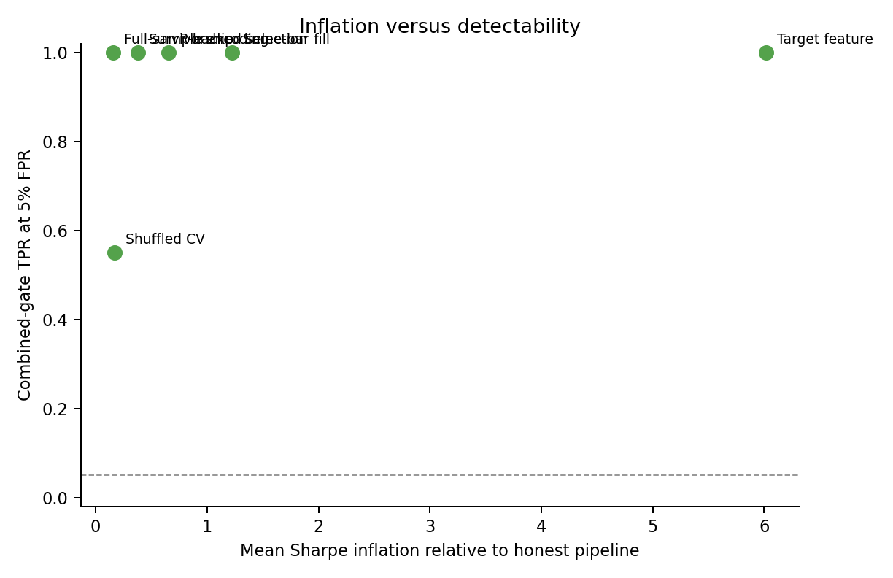
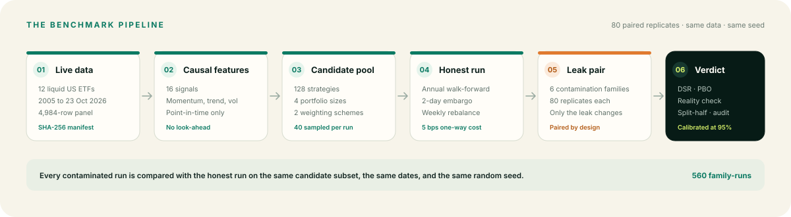
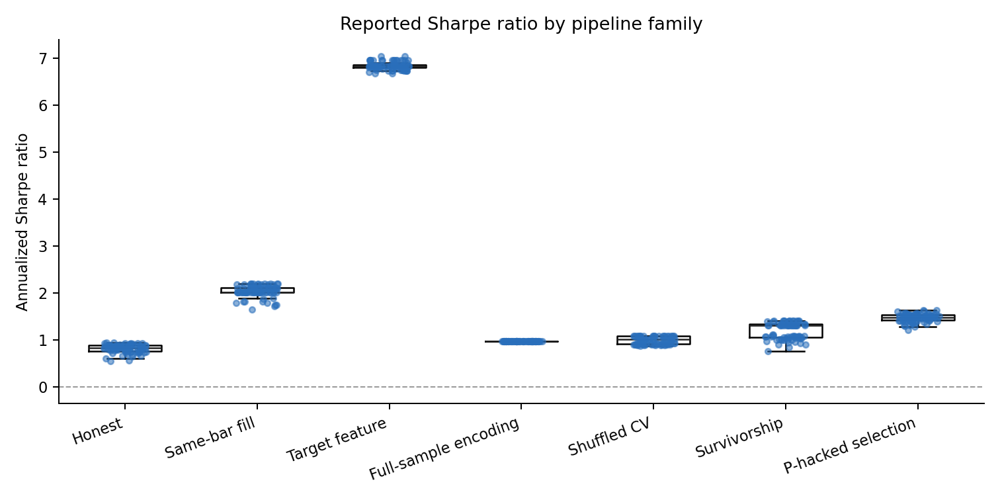
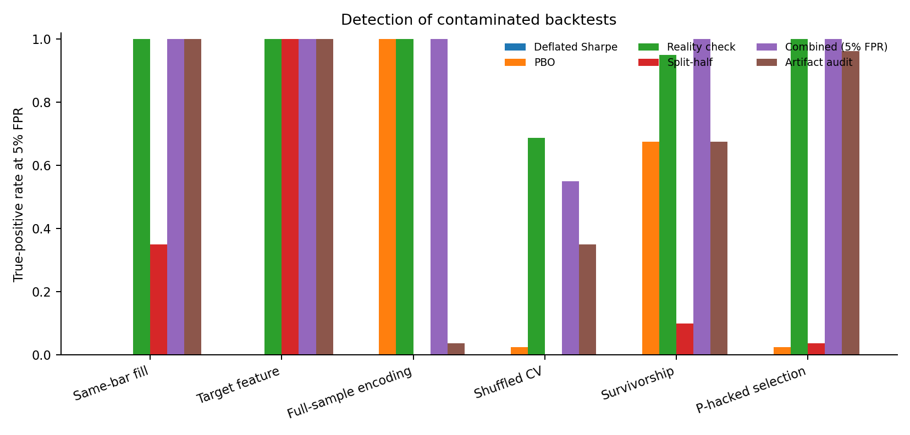

A backtest can see the future.
A timing mistake, a leaky feature, or a winner picked after the test can turn hindsight into what looks like skill.
Paired live-market benchmark · v0.1
A backtest can look brilliant because it cheated, not because it works. FakeAlpha is a paired, live-market benchmark that shows how six common leaks inflate performance, which diagnostics catch them, and which ones wave them through.
$ fakealpha reproduce ✓ data manifest verified ✓ 80 paired replicates ✓ 560 family-runs ✓ 21 tests passed honest Sharpe 0.821 highest leak 6.842 composite FPR 3.8% audit FPR 0.0%
The target-feature leak is 8.3× the honest Sharpe. The audit catches it 100% of the time; DSR does not.
If you only read one screen, read this. The rest of the page shows the evidence, the mechanics, and how to use it.
A timing mistake, a leaky feature, or a winner picked after the test can turn hindsight into what looks like skill.
Same ETFs, same dates, same candidates, same seed. Eighty paired replicates per contamination family.
Mean Sharpe rises from 0.821 to 6.842. The deflated Sharpe ratio catches 0% of the leaks; the nominal reality check publishes 98.8–100%.
A returns-only composite catches five of six families at a 3.8% false-positive rate. A clean re-execution audit checks the implementation.
Bottom line: no returns-only statistic proves a backtest is valid. Extreme performance is a reason to audit the pipeline, not a substitute for one.
FakeAlpha gives investment, research, and risk teams a shared language for the uncomfortable question: would this result survive a clean re-run?
Use the benchmark and the eight-question checklist to separate a reproducible result from a story about one.
Six deliberately constructed leaks show what inflated performance looks like when the mechanism is known.
The data card, model card, protocol, manifest, and run record make model-risk conversations concrete.
The quiz, figures, and controlled families turn “data leakage” from a definition into something a learner can see.
You do not need to be a quant to use the benchmark. You need a decision that depends on a historical result.
Put a manager’s backtest through a reproducible checklist before it becomes an allocation. Ask what the universe, the selection rule, and the re-run actually prove.
Use six controlled leak families as a test bed for new diagnostics. Add a gate and see whether it catches the leak without raising false positives.
Learn time-series validation on a real panel: walk-forward, embargoes, nested selection, target leakage, and why shuffled CV is a trap.
See a paired audit, its power curve, and its limits. A non-significant audit is not a clean bill of health; the benchmark shows why.
Start with the plain-English guide, take the twelve-question quiz, then read the code. You will understand more than most interview candidates.
Fork the harness, add a leak family or diagnostic, or run the same protocol on a different universe. MIT licensed and Docker-ready.
Each family changes one thing that a real researcher could get wrong. The point is not that every backtest is fraudulent. The point is that a high number cannot tell you which mechanism produced it.
Read the pattern, not just the ranking. The largest Sharpe lift is the easiest to detect. The small full-sample leak adds only +0.159 Sharpe and is the hardest for the audit to catch. That is why a single “caught / not caught” label is not enough.
All numbers below come from the committed result tables in results/tables/. Detection is measured at thresholds calibrated to the honest control’s 95th percentile.
| Family | Mean Sharpe | Lift | Composite | Audit | Plain meaning |
|---|---|---|---|---|---|
| Honest control | 0.821 | — | 3.8% FPR | 0.0% FPR | No leak; the baseline. |
| Same-bar fill | 2.048 | +1.227 | 100% | 100% | Trade today’s return at today’s close. |
| Target feature | 6.842 | +6.021 | 100% | 100% | Use next week’s return as a feature. |
| Full-sample encoding | 0.980 | +0.159 | 100% | 3.8% | Pick assets by their full-history return. |
| Shuffled CV | 0.990 | +0.169 | 55.0% | 35.0% | Shuffle time before validation. |
| Survivorship | 1.198 | +0.377 | 100% | 67.5% | Keep only the funds alive today. |
| P-hacked selection | 1.477 | +0.656 | 100% | 96.3% | Report the best test-year variant. |
Scale: 0 to 6.84. The honest control is the short gray bar.

The scariest row is the small leak. Full-sample encoding adds +0.159 Sharpe, yet the audit flags it in only 3 of 80 runs. A non-significant audit is not a clean bill of health; it may simply lack power.
The design is deliberately boring: hold everything constant, change one mechanism, and measure what the diagnostics can see.

Each contaminated run is compared with an honest run on the same 40-candidate subset and the same dates. The difference is the leak, not a new universe or a lucky seed.
Every gate is set at the 95th percentile of the honest suspicion score. The observed false-positive rate is reported, including the discrete 3/80 result.
The artifact audit reruns the honest pipeline and bootstraps the Sharpe difference with a paired circular block bootstrap. It observes implementation, not just returns.
Why 80 replicates? A single run is a coin flip. Repeated paired runs turn a single result into a rate with a confidence interval. The benchmark reports Wilson intervals and the full replicate table, not just a headline.
No finance degree required. If you can read a weather forecast, you can understand a backtest. This section builds the idea from the ground up; the quiz below checks it.
Imagine replaying last season’s football games with today’s playbook. That is a backtest: a rule applied to old data. It is useful only if the playbook could not see the final score.
If the playbook knows the final score, the replay looks brilliant. In data terms: a feature contains next week’s return, a trade uses today’s close, or the winner is chosen after the test.
A higher Sharpe means a smoother ride for the same return. It is a useful summary, but it is not proof that the strategy was allowed to know what it knew.
A track record is a claim about a pipeline. The cheapest way to test the claim is to rerun the pipeline with the same data and compare the result.
Data is the past. Signal is the rule. Backtest is the replay. Sharpe is the score.
At the moment of each decision, was every input actually available? If not, you have a timing or feature leak.
If the test years helped pick the winner, the reported score is selected, not out-of-sample.
DSR and the reality check see returns and trials. PBO sees the candidate matrix. The audit sees the implementation.
Use the checklist, then a clean re-execution. A non-significant audit is not proof; it may be low power.
“A high Sharpe is a question, not an answer.”
Work through this guide and the quiz, and you will understand more than most interview candidates.Twelve questions, from “what is a backtest?” to “why can a powerful audit still miss a small leak?” Instant explanations, no sign-up, no score saved.
This is a self-assessment, not a certification. Check what is true today; the gaps are the conversation.
At the composite’s 3.8% false-positive rate, about this many honest strategies would be flagged. A false positive costs review time; a false negative can cost much more.
The full run takes about 48 seconds on the development machine used for the paper, plus data-fetch time. The Docker path reproduces the committed summary byte for byte.
# Python 3.12 python3 -m venv .venv . .venv/bin/activate pip install -e ".[dev]" -c constraints.txt # Live data is cached; --force refetches fakealpha fetch --config config/experiment.yaml # 80 paired replicates fakealpha run --config config/experiment.yaml pytest -q ruff check src tests
docker compose build docker compose run --rm fakealpha # verified: summary.csv hash unchanged 6f44b24fb53b602f2fcc2d2a91e98948a4077f7ada9111334bc59bbe3723184c
What “reproduced” means here: the Docker run completed with exit 0 and regenerated results/tables/summary.csv with the same SHA-256 as the local run. The manifest records the data hashes, package versions, platform, and config.
The project is designed to be checked. Every headline number has a table, a seed, a manifest, or a test behind it.
It is a controlled benchmark for six known contamination mechanisms on one ETF universe and one test period. It does not estimate how common leakage is in the literature, prove intent, or certify a manager.
One universe, one period, six constructed leaks. Rates are calibration properties, not universal laws. A non-significant audit can be a power problem, not a clean result.


Short answers, with the caveat where it matters.
No. It is a benchmark for evaluating backtests. The honest pipeline is a controlled reference, not an investment product. Nothing here is investment advice.
No. It means the result deserves a clean re-run and a look at data timing, universe construction, and selection. Leakage is one explanation among many, including skill, luck, and a favorable regime.
The gate is calibrated at the honest 95th percentile, but with 80 honest replicates the empirical rate is discrete. Three of 80 is 3.75%, reported as 3.8%. That is the measured calibration, not a claim of exact 5% control.
Because the honest comparator is deterministic and identical to the honest run. The honest audit p-value is exactly 1 by construction. That 0% is not an empirical estimate and should not be transplanted to independent reimplementations.
The leak adds only +0.159 Sharpe. Over a fourteen-year test window, that difference is often inside the sampling noise. The audit is a validity check with a power curve, not a binary oracle.
Yes. The harness is MIT licensed and Docker-ready. Adapt the data loader and candidate pool, keep the pairing, and re-calibrate the thresholds on your own honest controls. Do not transplant the 3.8% rate.
No. The raw responses are cached locally and hashed; users should refetch them subject to Yahoo’s terms. The processed panel can be rebuilt from the cache.
External validity. The rates describe six constructed mechanisms on one ETF universe and one period. They show what can happen under controlled conditions; they do not estimate prevalence or prove that any particular manager is contaminated.
Bring a backtest.
Leave with a question.